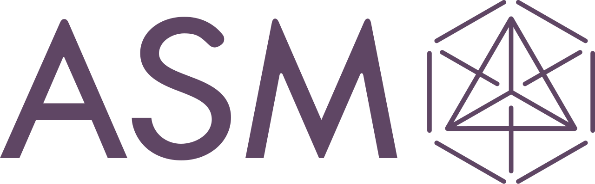

Cobot Assisted Semiconductor Tool Maintenance
During my internship at ASM, I engineered an automated solution for semiconductor equipment maintenance to replace the manual servicing of a heavy 56 kg showerhead component, effectively cutting field service engineer requirements by 50%. I unfortunately cannot share the source code or images of the project due to intellectual property restrictions, but I can provide a detailed overview of the work I accomplished during my internship.
Using PTC Creo, manual machining, and 3D printing, I designed and rapidly prototyped custom robotic end effectors and support hardware, achieving a precise ±3mm measured margin of error during component manipulation. To validate kinematics and safety, I built simulation environments in PyBullet and RoboDK to evaluate workspace constraints, run collision avoidance, and model trajectory planning using RRT-Connect algorithms for a JAKA Zu18 6 DoF collaborative robot. Additionally, I developed a computer vision pipeline and encoder-driven closed-loop control scheme in Python that integrated COGNEX industrial automation cameras, the JAKA Zu18, and a Kolver KDucer electric screwdriver over MODBUS TCP to fully automate fastener removal.